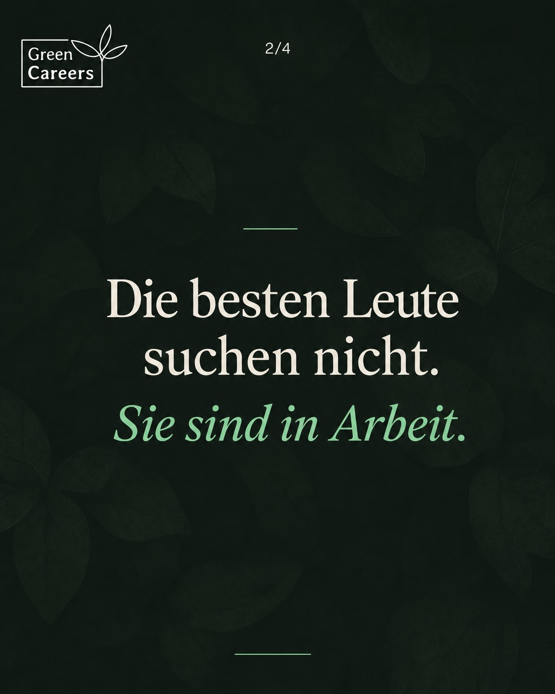
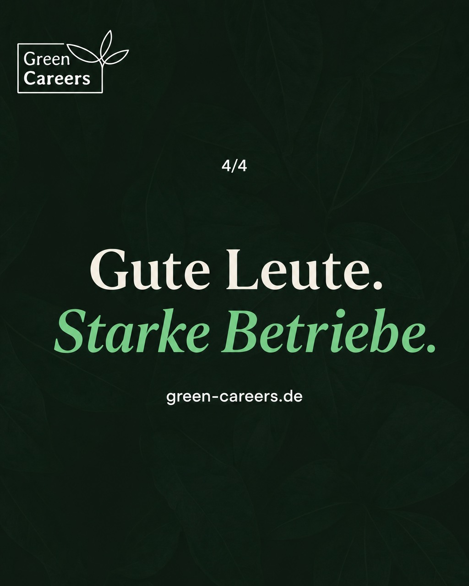
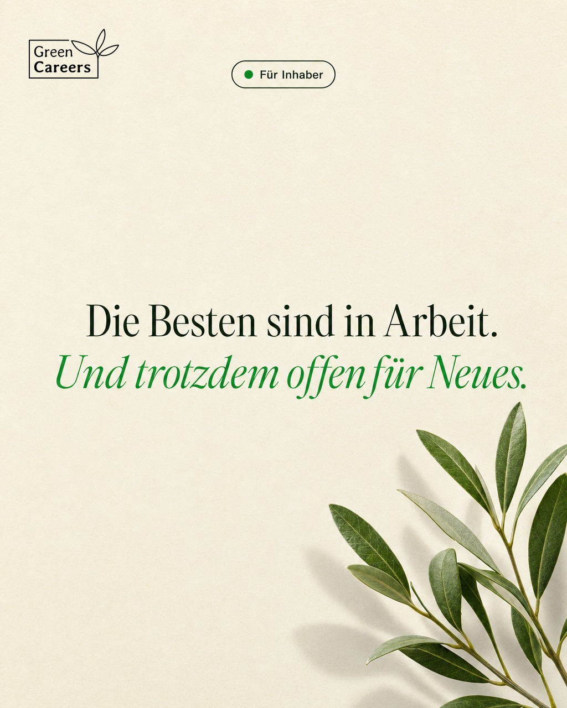
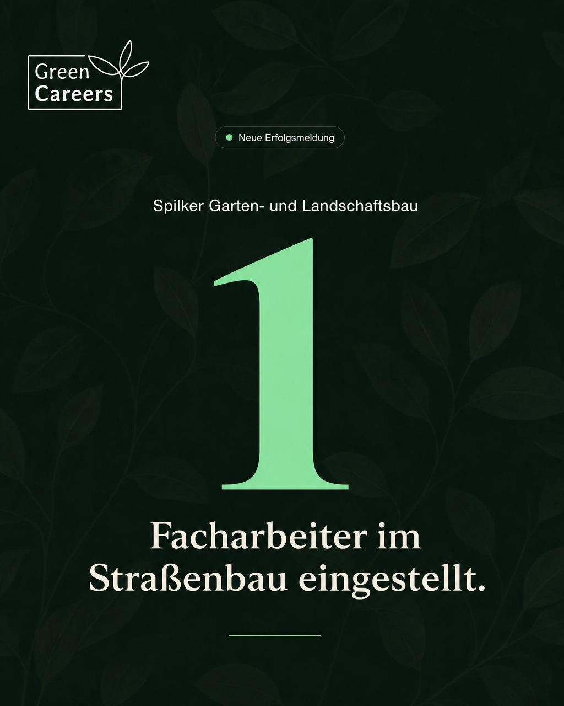
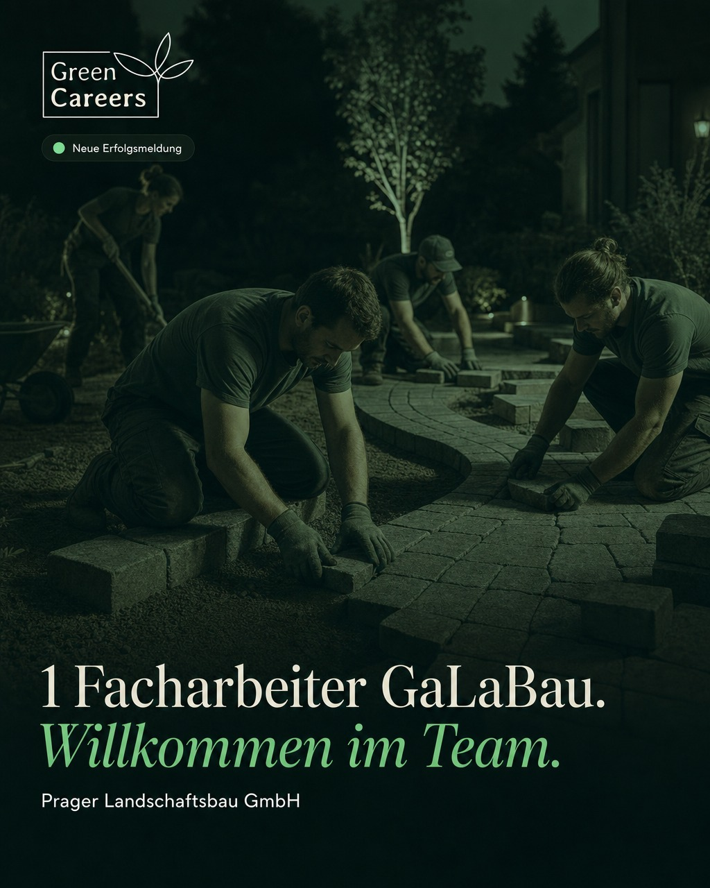

20 Posts, Mo 31.08. – Fr 25.09. · 5 pro Woche (Bewerber mittwochs 7:00, alle anderen 18:00). Änderungswunsch? Kurz im Chat oder per Slack melden – ich tausche Bild, Caption oder Termin, solange der Post nicht veröffentlicht ist.
8.000 bis 10.000 offene Stellen – allein im GaLaBau.
Der Markt hat sich gedreht: Nicht die Betriebe suchen aus, sondern die Fachkräfte. Wer heute einstellen will, braucht mehr als eine Anzeige in der Zeitung – er muss dort sichtbar sein, wo Gärtner und Landschaftsgärtner wirklich unterwegs sind.
Die gute Nachricht: Genau dafür gibt es uns.
Quelle: BGL-Branchenstatistik 2025
👉 green-careers.de
#galabau #fachkräftemangel #grünebranche
Di 01.09. · 18:00 UhrErfolgLook A · Dark Photo
#2 · Diederich: 3 neue Mitarbeiter
3 neue Mitarbeiter bei Baumschule & Gartenbau Ingo Diederich (Buxtehude): 2 Vorarbeiter und 1 Facharbeiter – gefunden über GreenCareers.
Solche Nachrichten sind der Grund, warum wir das hier machen. Einen guten Start ins Team!
🌱 green-careers.de
#baumschule #gartenbau #greencareers
Mi 02.09. · 07:00 UhrBewerberLook B · Cream
#3 · Umschauen erlaubt – 100 % diskret
Umschauen erlaubt. Und zwar so, dass es keiner mitbekommt.
Du bist in Arbeit und fragst dich, was draußen gerade möglich wäre? Bei GreenCareers schaust du dich um, ohne dich zu bewerben – dein Profil sehen nur Betriebe, die zu dir passen. Dein aktueller Arbeitgeber erfährt nichts davon.
Kostenlos, unverbindlich, 100 % diskret.
👉 green-careers.de
#galabau #jobwechsel #greencareers


Do 03.09. · 18:00 UhrInhaberKarussell · A-Cover4 Slides
#4 · Keine Bewerbungen? (4 Slides)
Keine Bewerbungen auf Ihre Stellenanzeige? Das liegt selten an Ihrem Betrieb.
Die besten Fachkräfte sind in Arbeit – sie lesen keine Stellenbörsen. Erreichbar sind sie trotzdem: dort, wo sie jeden Tag scrollen. Genau dort machen wir Ihre Stellen sichtbar.
Mehr dazu im Karussell. →
👉 green-careers.de
#galabau #recruiting #fachkräfte
Fr 04.09. · 18:00 UhrErfolgLook C · Deep Green
#5 · Astwerk: 2 Facharbeiter
2 Facharbeiter für die Astwerk Niels Beyer GmbH – gefunden über GreenCareers.
Baumpflege ist ein Spezialgebiet, gute Leute sind da besonders schwer zu finden. Umso schöner, wenn's passt. Willkommen im Team!
🌱 green-careers.de
#baumpflege #grünebranche #greencareers
KW 37 · 07.09.–11.09.
Mo 07.09. · 18:00 UhrInsightLook B · Cream
#6 · 8.089 neue Azubis
8.089 junge Menschen haben zuletzt eine Ausbildung im GaLaBau begonnen.
Der Nachwuchs kommt – und das ist gut so. Nur: Bis aus einem Azubi eine Fachkraft wird, dauert es drei Jahre. Die Lücke von heute schließt er nicht.
Deshalb bleibt der Markt für ausgelernte Kräfte so umkämpft wie nie.
Quelle: BGL-Branchenstatistik 2025
👉 green-careers.de
#galabau #ausbildung #grünebranche
Di 08.09. · 18:00 UhrErfolgLook C · Deep Green
#7 · Grünkonzept: 2 Landschaftsgärtner
2 Landschaftsgärtner für Grünkonzept GaLaBau 360° – gefunden über GreenCareers.
Gleich doppelte Verstärkung fürs Team. Wir freuen uns mit – guten Start euch beiden!
🌱 green-careers.de
#galabau #landschaftsgärtner #greencareers
Mi 09.09. · 07:00 UhrBewerberKarussell · A-Cover4 Slides
#8 · So läuft es – 3 Schritte (4 Slides)
Bewerben war gestern. So läuft's bei uns:
Du zeigst einmal, was du kannst und wo du hinwillst. Passende Betriebe aus deiner Region melden sich bei dir – und du entscheidest, mit wem du sprichst. Kein Anschreiben, kein Papierkram, keine Wartezeit.
Die drei Schritte im Karussell. →
👉 green-careers.de
#galabau #grünejobs #greencareers
Do 10.09. · 18:00 UhrInhaberLook B · Cream
#9 · Auftragsvorlauf 4–6 Monate
4 bis 6 Monate Auftragsvorlauf – so voll sind die Bücher im GaLaBau gerade.
Klingt nach einem Luxusproblem. Ist es aber nicht, wenn die Leute fehlen, um die Aufträge abzuarbeiten. Wachstum scheitert in der grünen Branche selten an der Nachfrage – fast immer am Personal.
Quelle: BGL-Branchenstatistik 2025
👉 green-careers.de
#galabau #fachkräftemangel #grünebranche
Fr 11.09. · 18:00 UhrBrandLook A · Dark Photo
#10 · Das Karrierenetzwerk
Das Karrierenetzwerk für die grüne Branche.
Wir bringen Betriebe und Fachkräfte zusammen – vom GaLaBau über die Baumschule bis zur Baumpflege. Ohne Anschreiben, ohne Umwege, dafür mit Handschlagqualität.
Schön, dass du hier bist. 🌿
👉 green-careers.de
#greencareers #grünebranche #galabau
KW 38 · 14.09.–18.09.
Mo 14.09. · 18:00 UhrInsightLook C · Deep Green
#11 · 131.746 Beschäftigte – Rekord
131.746 Menschen arbeiten im GaLaBau – Rekord.
Die Branche wächst seit Jahren, und sie trägt: sichere Jobs, echte Projekte, Arbeit draußen statt am Schreibtisch. Wer was schaffen will, ist hier richtig.
Quelle: BGL-Branchenstatistik 2025
👉 green-careers.de
#galabau #grünebranche #greencareers
Di 15.09. · 18:00 UhrErfolgKarussell · B-Cover5 Slides
#12 · Sammel-Karussell (5 Slides)
Eingestellt – über GreenCareers.
Drei Erfolgsmeldungen aus dem Netzwerk: vom Landschaftsgärtner bis zum LKW-Fahrer. Hinter jeder Zahl steht ein Betrieb mit neuer Verstärkung im Team.
Weiter geht's. 🌿
👉 green-careers.de
#galabau #grünebranche #greencareers
Mi 16.09. · 07:00 UhrBewerberLook A · Dark Photo
#13 · Probetag: Erst kennenlernen
Erst kennenlernen, dann entscheiden.
Ein Probetag sagt mehr als jedes Vorstellungsgespräch: Du siehst die Baustelle, die Kollegen, den Chef – und merkst schnell, ob es passt. Genau so soll ein Jobwechsel laufen.
Kein Risiko, keine Verpflichtung.
👉 green-careers.de
#galabau #probearbeiten #grünejobs

Do 17.09. · 18:00 UhrInhaberLook B · Cream
#14 · Die Besten sind in Arbeit
Die besten Fachkräfte sind in Arbeit. Und trotzdem offen für Neues.
Wer zufrieden ist, bewirbt sich nicht aktiv – aber zuhören, was möglich wäre, das tun die meisten. Genau diese Leute erreichen Sie nicht über Stellenbörsen, sondern dort, wo sie täglich unterwegs sind.
Wir wissen, wo.
👉 green-careers.de
#recruiting #galabau #fachkräfte

Fr 18.09. · 18:00 UhrErfolgLook C · Deep Green
#15 · Spilker: 1 Facharbeiter Straßenbau
1 Facharbeiter im Straßenbau für Spilker Garten- und Landschaftsbau – gefunden über GreenCareers.
Auch das ist grüne Branche: Wo Garten- und Straßenbau zusammenkommen, braucht es Leute, die beides können. Willkommen im Team!
🌱 green-careers.de
#galabau #straßenbau #greencareers
KW 39 · 21.09.–25.09.
Mo 21.09. · 18:00 UhrInsightLook B · Cream
#16 · 11,11 Mrd. € Umsatz
11,11 Milliarden Euro Umsatz – plus 4,3 Prozent zum Vorjahr.
Der GaLaBau wächst weiter, quer durch alle Regionen. Für Betriebe heißt das: volle Auftragsbücher. Für Fachkräfte: Es gab selten einen besseren Zeitpunkt, sich den passenden Betrieb auszusuchen.
Quelle: BGL-Branchenstatistik 2025
👉 green-careers.de
#galabau #grünebranche #greencareers
Di 22.09. · 18:00 UhrErfolgLook C · Deep Green
#17 · Blumenkamp: 1 Landschaftsgärtner
1 Landschaftsgärtner für Gartenservice Blumenkamp – gefunden über GreenCareers.
Willkommen im Team und einen guten Start!
🌱 green-careers.de
#galabau #landschaftsgärtner #greencareers
Mi 23.09. · 07:00 UhrBewerberKarussell · A-Cover5 Slides
#18 · 3 Dinge fürs Profil (5 Slides)
Drei Dinge, die dein Profil stark machen.
Kein Lebenslauf-Roman, keine Floskeln – Betriebe wollen wissen: Was kannst du, wo willst du hin, ab wann geht's los? Wer das klar beantwortet, bekommt die besseren Angebote.
Die Details im Karussell. →
👉 green-careers.de
#galabau #grünejobs #greencareers
Do 24.09. · 18:00 UhrInhaberLook B · Cream
#19 · Oktober ist Pflanzsaison
Oktober ist Pflanzsaison – die arbeitsreichste Zeit des Herbstes.
Wenn die Ballenware kommt, zählt jede Hand. Wer jetzt merkt, dass das Team zu dünn besetzt ist, sollte nicht bis zum Frühjahr warten: Gute Leute sind auch im Herbst wechselbereit.
👉 green-careers.de
#galabau #pflanzsaison #recruiting

Fr 25.09. · 18:00 UhrErfolgLook A · Dark Photo
#20 · Prager: 1 Facharbeiter GaLaBau
1 Facharbeiter GaLaBau für die Prager Landschaftsbau GmbH – gefunden über GreenCareers.
Willkommen im Team und einen guten Start!
🌱 green-careers.de
#galabau #facharbeiter #greencareers